1 - Introduction
After this lecture you should be able to:
- Distinguish core computer vision tasks (classification, detection, segmentation).
- Describe key real-world application domains and practical challenges.
- Explain why deep learning reshaped computer vision.
Applications (examples):
- Wildlife monitoring (camera traps), medical imaging, autonomous driving
- Photo editing, image search & retrieval, facial recognition
- On-device inference on mobile chips
Computer Vision Tasks:
- Classification: Assign images to predefined classes
- Detection: Locate and recognize multiple objects with bounding boxes
- Segmentation: Assign each pixel to objects (instance) or classes (semantic)
- Generation: Transform or create images (translation, synthesis, text-to-image)
There are many more, but these are core tasks.
Key Challenges:
- Semantic gap (pixels → meaning)
- Viewpoint, illumination, occlusion
- Intra-class variation and background clutter
- Context dependence
Classical vs. Deep Learning:
- Classical CV: Hand-crafted features (HOG, SIFT, color histograms) + ML classifiers → limited scalability
- Deep Learning: End-to-end learned hierarchical representations → automatic feature extraction, better scaling with data
The AlexNet Breakthrough (2012):
- Reduced ImageNet top-5 error from 25.8% to 16.4% — a 9.4 percentage point improvement
- Marked the shift from hand-crafted features to end-to-end deep learning
- Enabled by: large datasets, GPU computing, CNN architectures
1 Motivation
Deep Learning models have played a transformative role in Computer Vision over the last decade, significantly enhancing and expanding the capabilities to process visual data.
The integration of deep learning in computer vision has massively improved the accuracy and efficiency of visual recognition, classification, and analysis. This has opened up new possibilities in applications such as autonomous driving, facial recognition, and medical image analysis. These models are now embedded in a wide variety of products and services.
Let’s take a look at several applications of deep learning assisted computer vision applications.
1.1 Applications
To monitor wildlife populations biologists can deploy camera traps to capture images from passing animals (see Figure 1). These images need to be analysed, for example, biologists need to know which species can be seen in each image. Deep learning can speed up that process significantly (Willi et al. (2019)).
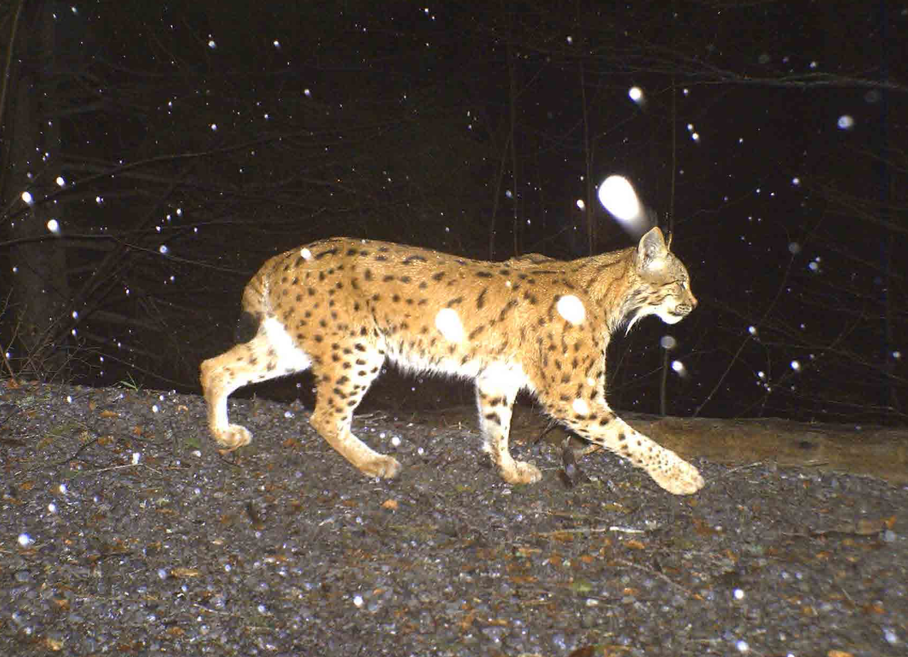
Recent advances in generative deep learning enable anyone to create photorealistic synthetic images (see Figure 2 for examples). While these technologies have many positive applications (art, design, prototyping), they also raise concerns about misinformation and deepfakes, motivating research into synthetic media detection (Mathys, Willi, and Meier (2024) and Willi et al. (2026)).
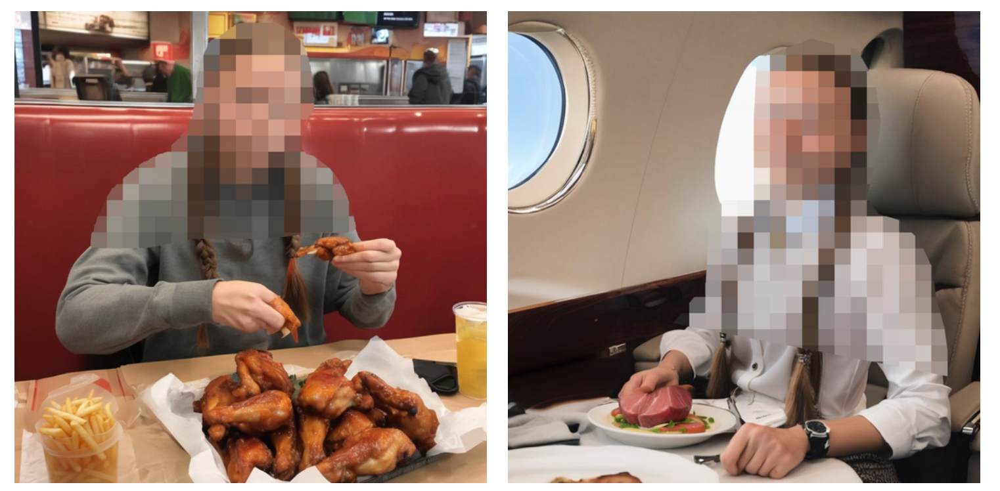
Apple’s photo library uses deep learning to automatically classify and search through your photos. The system can recognize scenes (beach, mountain), objects (dog, car), and even activities (birthday, wedding). Additionally, sophisticated safety systems scan for problematic content while preserving privacy through on-device processing (Figure 3).
Deep learning can be used to identify objects, to find similar images (image search / retrieval), or to find (near-)duplicates (perceptual hashing), see Figure 4 (left). Increasingly, models can cross modalities and, for example, process visual data and produce textual outputs. An interesting example is image captioning or the detection and translation of text in images (optical character recognition - OCR), see Figure 4 (right).
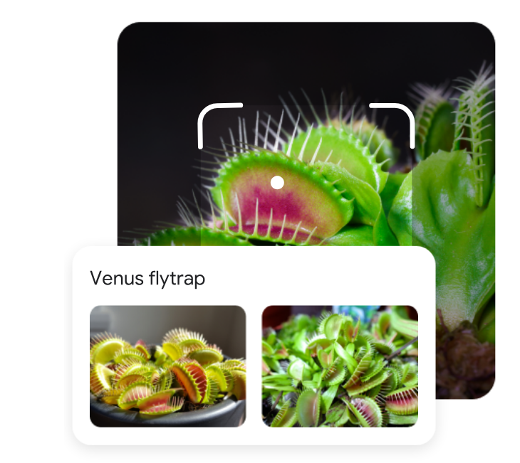
One area with high commercial interest and competition is the development of self-driving capabilities. Figure 5 shows a demonstration of the perception system required for autonomous driving, including detecting vehicles, pedestrians, cyclists, and understanding lane markings and traffic signs in real-time.
Face recognition technology, such as Apple’s Face ID (Figure 6), has become ubiquitous in consumer devices. The system uses infrared depth sensing to create a 3D map of facial features, making it more secure than 2D image-based recognition and robust to different lighting conditions.
Computer vision has also been very useful in agricultur. Figure 7 shows an application where apples can be counted from image data. Furthermore, drones might be used to estimate crop yield, type and health.
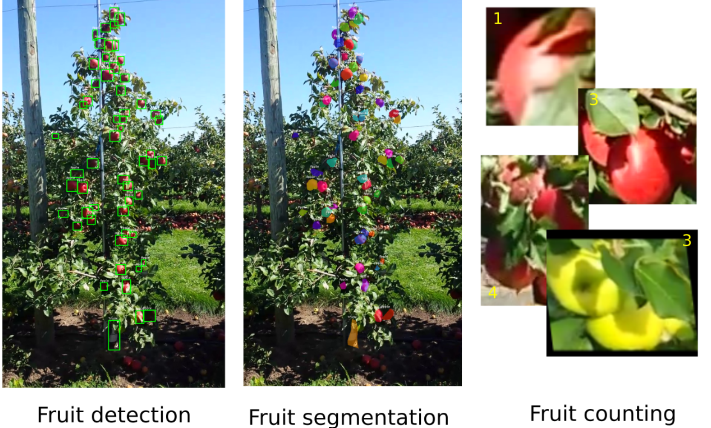
Deep learning has also been applied extensively in the medical area. In particular, many imaging technologies, such as MRI or CT, can be analysed with computer vision techniques. Figure 8 illustrates a generic segmentation model which can be used to identify organs and other anatomical structures on pixel-level.
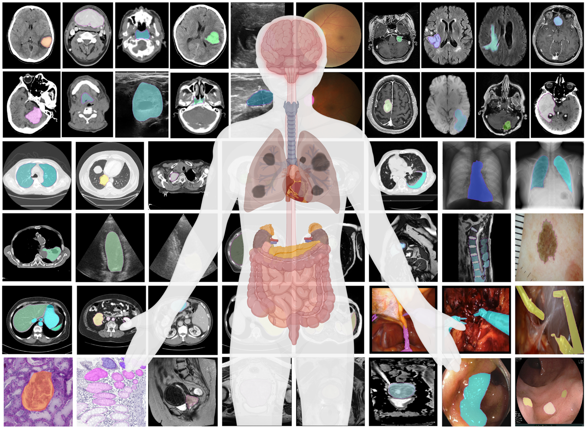
Photo-editing has been brought to new levels of sophistication with AI-based capabilities. Figure 9 shows an impressive example from the Google Magic Editor. Maybe even a bit too good?
🤔 Think About It
What computer vision tasks do you think the model in Figure 9 must perform to enable this editing capability?
Possible tasks involved
- Object detection and segmentation (identifying what to remove/move)
- Inpainting (filling in removed areas)
- Style transfer (matching lighting/texture)
- Scene understanding (maintaining realistic perspective)
The increasingly better models and the ability to run them quickly and resource-efficiently on mobile devices have enabled such applications. Figure 10 shows that special chips have been developed to process images with Deep Learning models quickly.
2 Computer Vision Tasks
2.1 Image Classification
In image classification, an image is assigned to a predefined set of classes. In multi-class classification, there are \(\gt 2\) classes; in binary classification, there are exactly 2 classes; and in multi-label classification, there are multiple sets of classes. Figure 11 shows an example of multi-class classification.

2.2 Object Detection
Object detection involves locating and recognizing multiple objects in an image. Figure 12 shows an example Redmon et al. (2016). Each object is localized with a bounding box and assigned an object class with a confidence score.
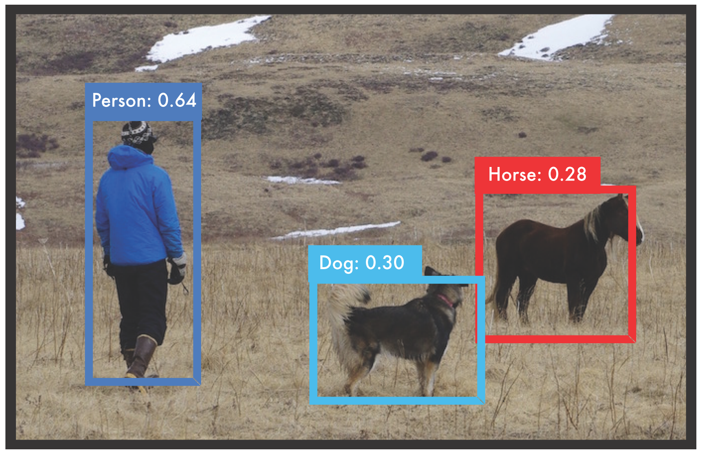
2.3 Segmentation
In segmentation, individual pixels are assigned to specific objects (instance segmentation) or classes (semantic segmentation). Figure 13 shows an example of instance segmentation from He et al. (2018), where individual objects are detected and precisely localized at the pixel level.
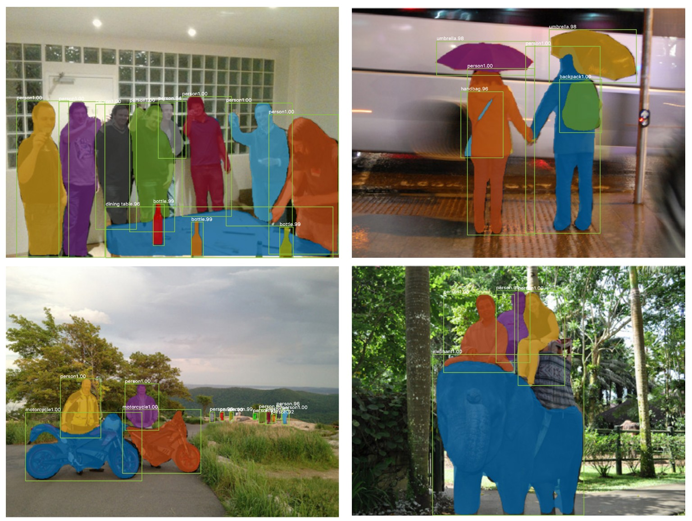
The following video shows an example of semantic segmentation:
2.4 Keypoint Detection
In keypoint detection, specific points on objects — typically human body joints — are localized. Figure 15 shows an example from the paper by He et al. (2018). This can be used to transfer movements from a person to an avatar or to recognize human activities (action recognition).
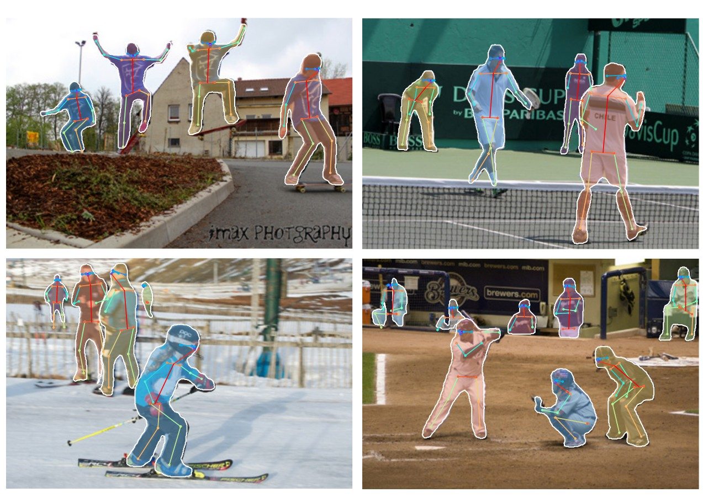
2.5 Image Generation
There are various applications where models transform input images into specific output images (image-to-image translation) or generate completely new images from scratch (unconditional generation). Below are example applications.
2.5.1 Image Manipulation
Interactive manipulation allows users to modify images by dragging points to reshape objects while maintaining realistic appearance.
2.5.2 Image Translation
Figure 17 shows an example of image generation from the paper by Isola et al. (2018), where images are generated conditioned on image inputs (translated). This can be used, for example, to convert a sketch of an object into a photorealistic depiction of it.
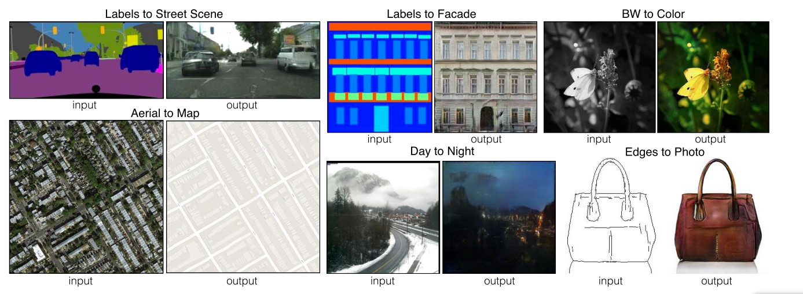
2.5.3 Image Super Resolution
In the gaming industry, Deep Learning is used to upscale low-resolution images to high-resolution in real-time (image super resolution), as shown in Figure 18. This enables higher frame rates while maintaining visual quality.
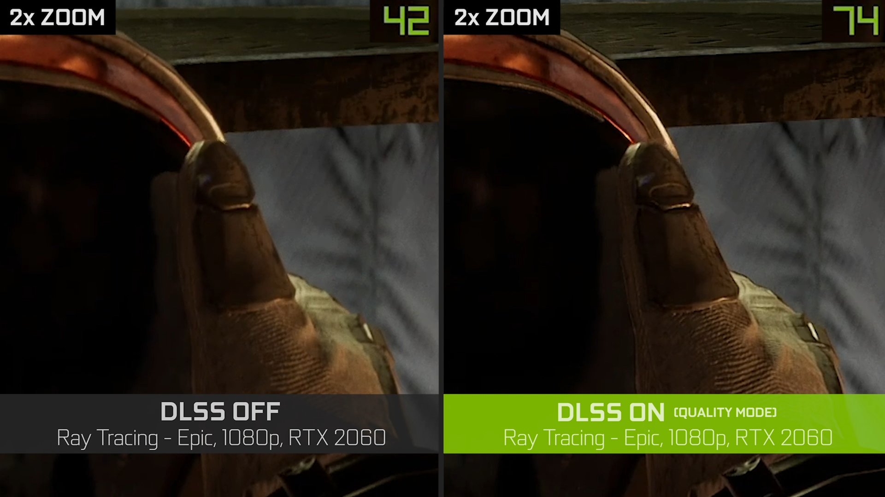
{kind=link}
2.5.4 Image Colorization
Image colorization can be learned with Deep Learning. This involves transforming a black-and-white image into an RGB image. Figure 19 shows an example.
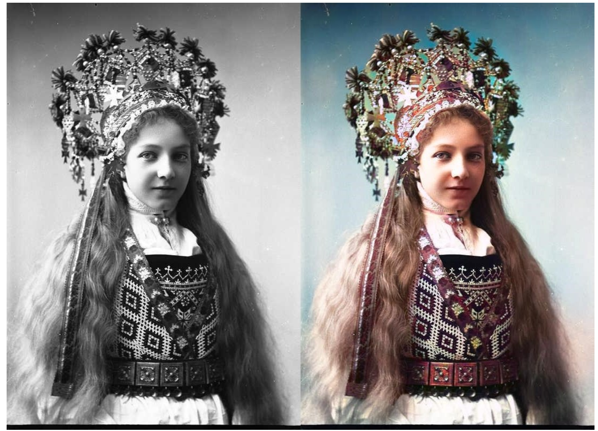
2.5.5 View Synthesis
In view synthesis, new camera viewpoints of a scene are generated from a model. Neural Radiance Fields (NeRFs) are models that can generate novel views from a set of input images taken from known viewpoints. Figure 20 shows training data (input images from different angles) and the synthesized novel views the model can generate.
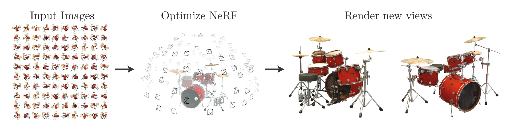
Modern variants can produce impressive quality, as shown in Figure 21.
2.5.6 Unconditional Generation
In unconditional image generation, images are generated that resemble the training data distribution without specific input guidance. While you have no direct control over what specific image is generated, you can often manipulate latent variables to modify generated images or interpolate between samples. Figure 22 shows photorealistic portraits generated by a model trained on human faces.
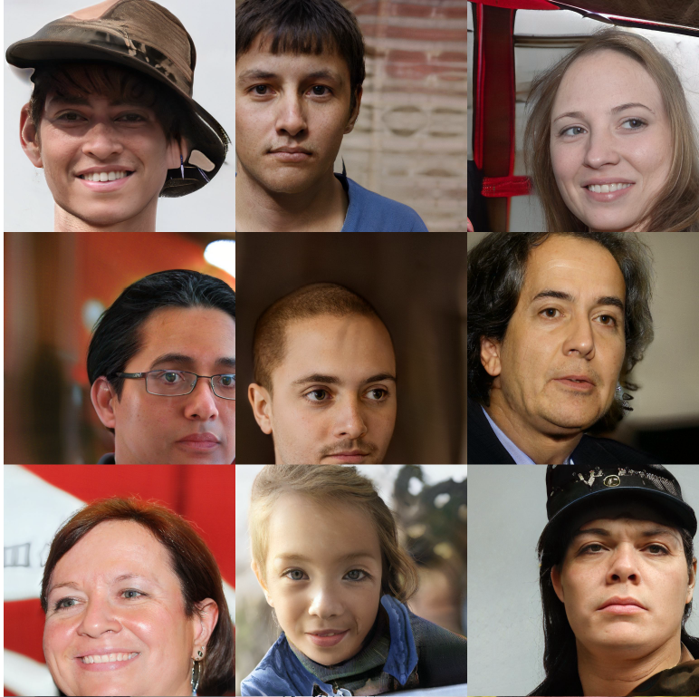
2.5.7 Text to Image
Figure 23 shows an example of image generation from the paper by Rombach et al. (2022), where images are generated conditioned on text inputs.
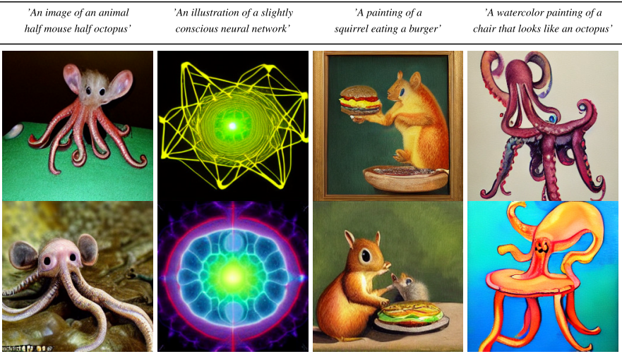
On civitai, there are numerous examples and models to admire or download.
2.6 Further tasks
There are many more computer vision tasks. The following list is not exhaustive:
- Image Classification
- Object Detection (and Tracking)
- Image Segmentation
- Semantic Segmentation
- Instance Segmentation
- Optical Character Recognition (OCR)
- Pose Estimation
- Facial Recognition
- Action Recognition
- Image Generation
- Style Transfer
- Image Inpainting
- Super-Resolution
- Text-to-Image (and more)
- Image Captioning
- 3D Reconstruction
- Image Retrieval
2.7 What about videos?
Many of the image-level tasks can be extended to videos. After all, videos are nothing but a sequence of images.
The most recent impressive examples are from video generative models:
But also object / keypoint tracking:
Match each application to the most appropriate computer vision task:
Applications:
- Analyzing camera trap images - Identifying which animals appear in wildlife monitoring photos
- Apple’s on-device image categorization and safety filters - Classifying photos into categories or detecting inappropriate content
- Image search - Finding visually similar images in a large database
- Finding tumors in medical images - Precisely localizing and delineating abnormal tissue in CT or MRI scans
- Counting apples in an orchard - Detecting and tallying individual fruits on trees
Available Tasks:
- Image Classification
- Object Detection
- Image Segmentation
- Image Retrieval/Embedding
Click for result
- Analyzing camera trap images → Image Classification or Object Detection
- Image Classification if you only need to know which species are present (one or more labels per image)
- Object Detection if you need to count individuals or localize where each animal appears in the frame
- The choice depends on the specific analysis requirements and label availability
- Apple’s on-device image categorization and safety filters → Image Classification
- This involves assigning images to predefined categories (e.g., “food”, “people”, “landscape”) or detecting inappropriate content
- Multi-label classification is used when an image can belong to multiple categories
- Image search → Tricky - Not directly a standard task
- This doesn’t fit neatly into classification, detection, or segmentation
- Closest to Image Classification conceptually, as it relies on learned image representations/embeddings
- In practice, uses feature extraction (embedding) to compute similarity between images
- Often leverages classification networks trained on large datasets, but applied for retrieval rather than classification
- Finding tumors in medical images → Image Segmentation
- Requires pixel-level precision to delineate tumor boundaries
- Semantic Segmentation if identifying tumor vs. non-tumor tissue
- Instance Segmentation if distinguishing between multiple separate tumors
- Counting apples in an orchard → Object Detection
- Need to localize and count individual apples
- Each apple gets a bounding box, and counting is straightforward from detection results
- Could also use instance segmentation for more precise boundaries, but detection is typically sufficient
3 Challenges
A number of fundamental challenges must be overcome when analyzing images with machine learning models.
3.1 Semantic Gap
The semantic gap refers to the discrepancy between the low-level pixel information that can be directly extracted from an image and the high-level semantic interpretation understood by humans. An image consists of millions of pixel values, but deriving semantically meaningful concepts like “cat” or “sitting” from these raw numbers is extremely challenging.
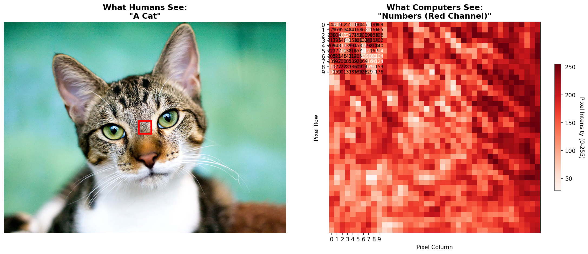
3.2 Viewpoint
The semantic meaning of an image remains constant regardless of camera viewpoint, but the pixel values change dramatically. A model must learn to recognize the same object from different angles.
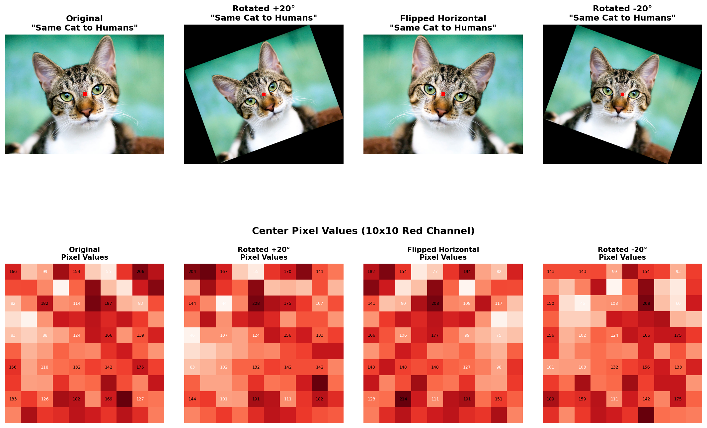
3.3 Deformation
Objects, especially living beings, are often flexible and can appear in vastly different shapes and poses. Models must recognize a cat whether it’s curled up sleeping or stretched out running.
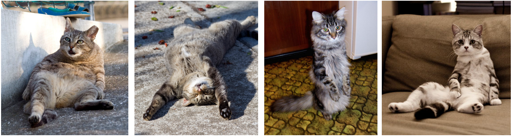
3.4 Illumination
Changes in lighting conditions dramatically affect pixel values and can obscure object features. The same object under different lighting can produce vastly different images.
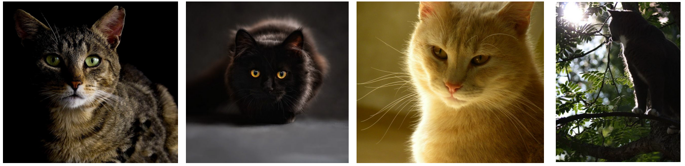
3.5 Background Clutter
Background pixels can visually resemble the object of interest, making precise object localization and segmentation difficult. The model must learn to distinguish foreground from background.
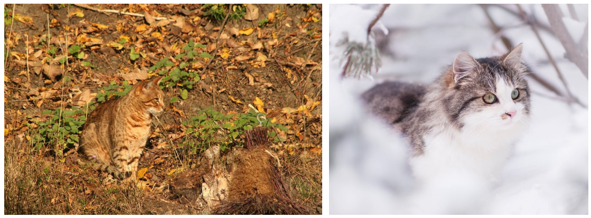
3.6 Occlusion
Objects are often partially hidden by other objects in the scene. Models must learn to recognize objects even when only part of them is visible.
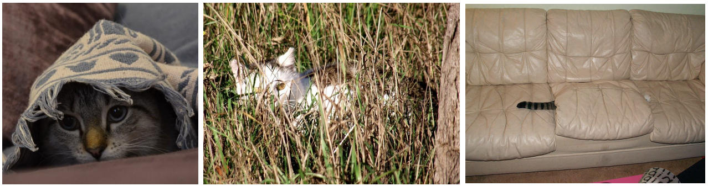
3.7 Intra-Class Variation
Objects belonging to the same class can exhibit enormous variability in appearance, color, size, and texture. All cats are cats, but they can look very different from each other.
3.8 Context Dependence
Figure 33 shows that contextual information can be crucial for correct object classification. The surrounding scene provides important cues about what objects are likely to be present.
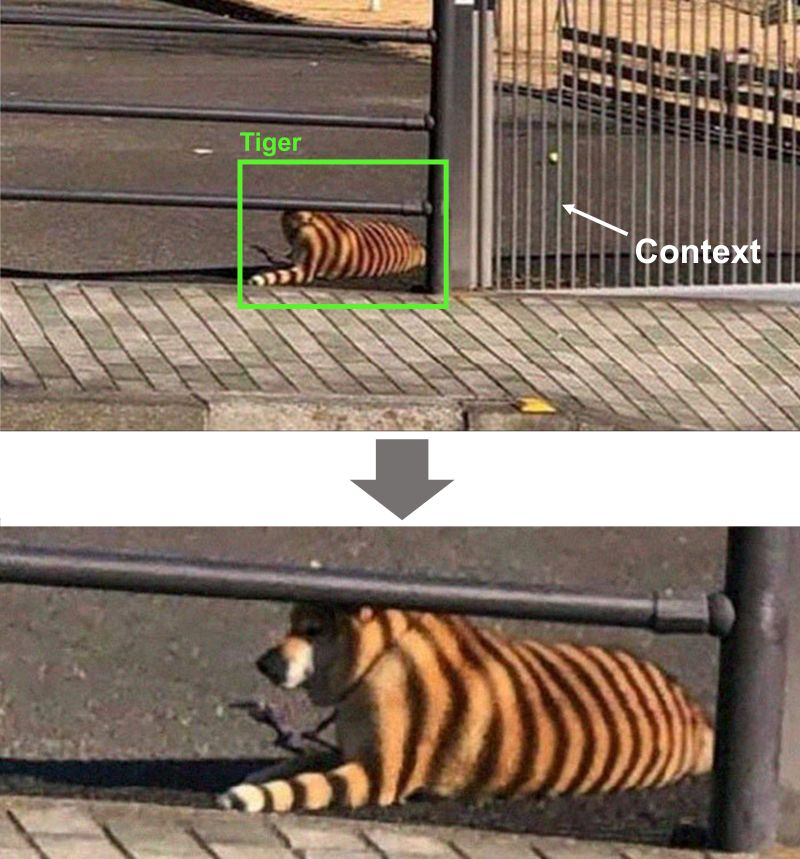
Figure 34 represents an interesting example where context is important: Shown are four images with severe quality degradation (blur) and oval objects indicated with dashed black lines. Notably, each marked object is exactly identical on pixel level (apart from a rotation) — yet we can form clear hypotheses what each of the objects represents.
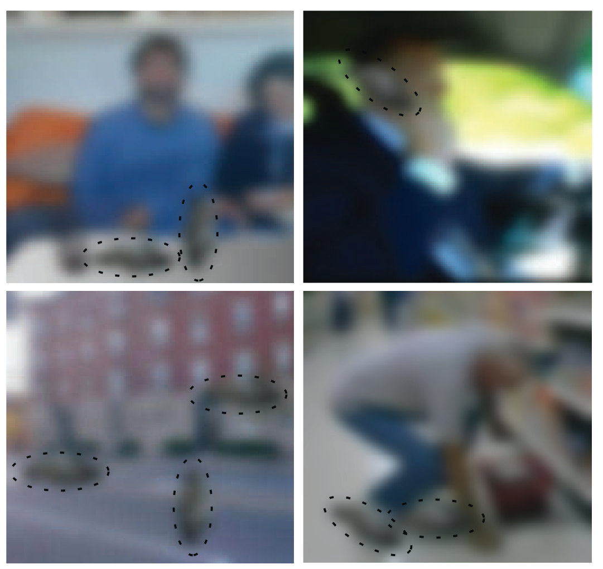
4 From Classical Computer Vision to Deep Learning
4.1 The Limitations of Hand-Crafted Features
Images typically have very high dimensionality. For example, an RGB image with a resolution of \(800 \times 600\) has a dimensionality of \(800 \times 600 \times 3 = 1,440,000\). Classical machine learning algorithms often struggle with such high dimensionalities:
- They are very slow or require a lot of memory.
- They cannot exploit the 2-D structure of images.
- They are very sensitive to slight changes in images (e.g., rotations).
- They can easily overfit, as the number of features is close to the number of observations (training set).
When modeling images with (classical) machine learning algorithms, methods from (classical) computer vision are often used. With the help of such methods, features can be extracted from images, and the algorithms can learn on these features. This avoids modeling high-dimensional raw data. Figure 35, Figure 36, and Figure 37 show various feature extraction methods.
Figure 35 shows that, for example, the distribution over the color spectrum can be extracted from an image. This could be an important feature.
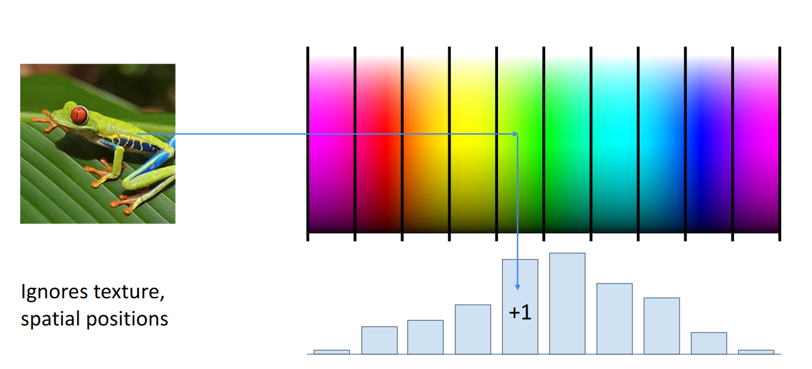
Figure 36 shows that techniques like Histogram of Oriented Gradients (HOG) Dalal and Triggs (2005) can be used to extract structures from images. Such features were successfully used for pedestrian detection Dalal and Triggs (2005).
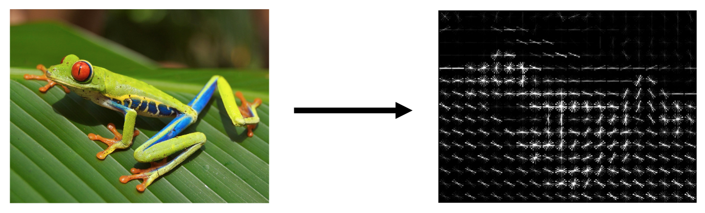
Figure 37 shows another feature variant. Visual patches can be extracted from a dataset, clustered, and then used as descriptors.
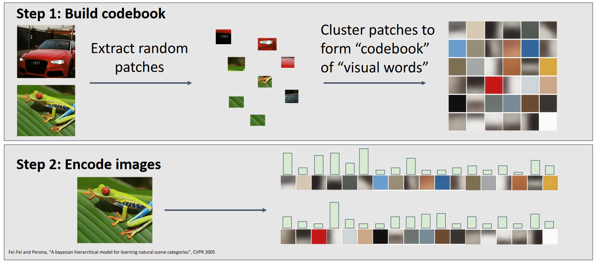
Finally, all features can be combined, often more is better, as shown in Figure 38.
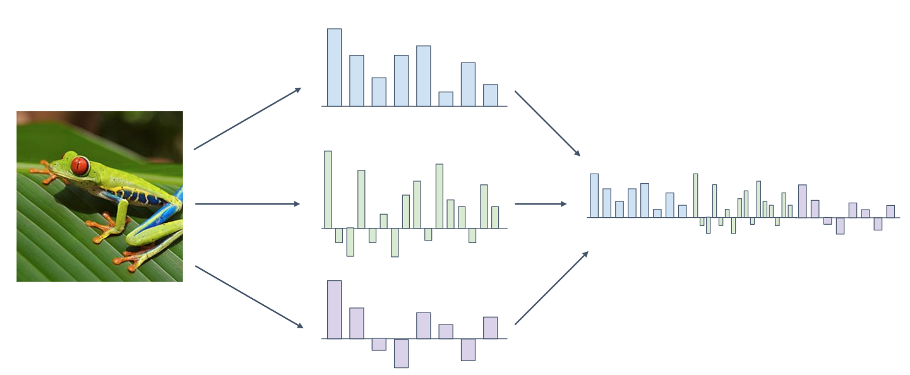
Depending on the parameterization, HOG descriptors, for example, can be very large for images. The resulting feature vector from Figure 38 can still be reduced in dimensionality, e.g., with Principal Component Analysis.
Figure 39 shows the CIFAR10 dataset. A well-known dataset for testing models, consisting of 10 classes with 6,000 images each.
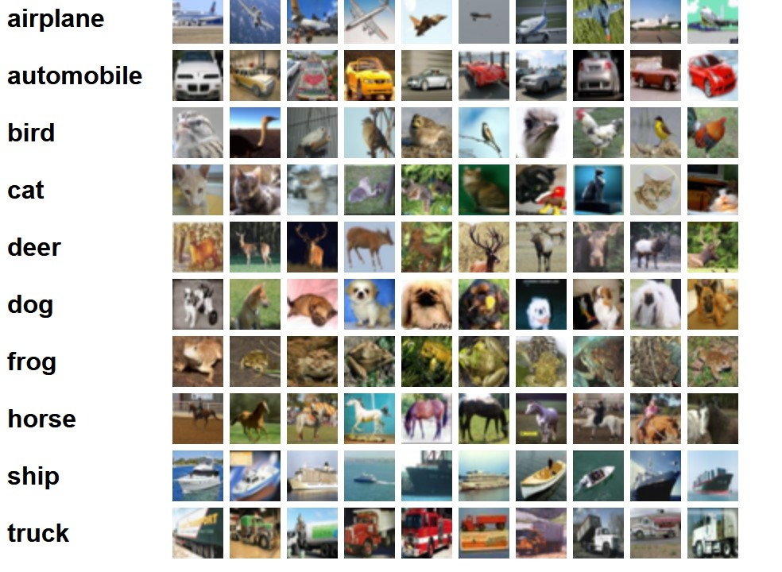
4.2 The ImageNet Breakthrough (2012)
To accelerate research in computer vision and make progress more measurable, the PASCAL VOC Challenges were introduced Everingham et al. (2007). These involved various tasks, such as detecting objects in photographs (Figure 40).
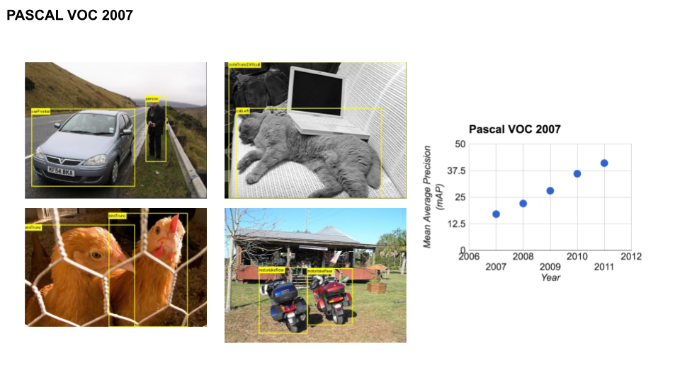
The easy availability of images on the internet has made it possible to collect increasingly larger datasets. ImageNet is such a very large, hierarchically annotated image dataset Deng et al. (2009) with over 1.4 million images, categorized into 1,000 object classes. Figure 41 illustrates the dataset.
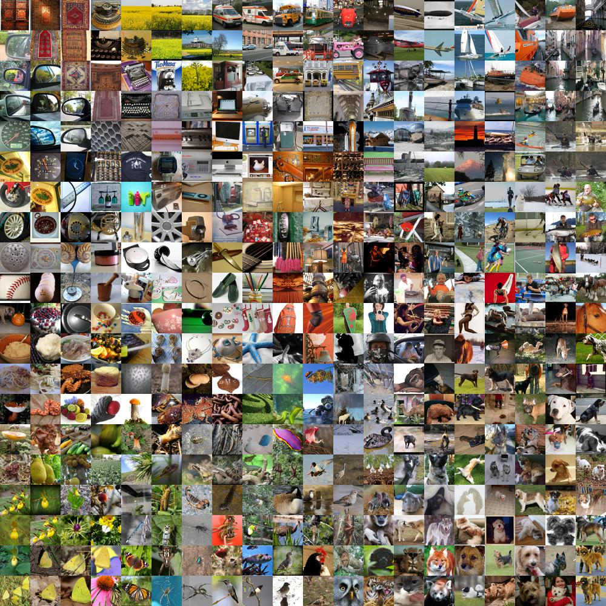
{kind=link}
Since 2010, challenges have been regularly conducted on the ImageNet dataset Russakovsky et al. (2015), such as image classification and object detection. Figure 42 shows the development of the error rate over time.
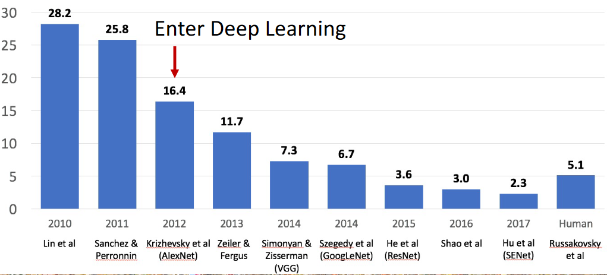
4.3 End-to-End Learning
The key conceptual shift is from hand-designed feature pipelines to end-to-end learning. Rather than designing features manually, the model learns to extract relevant features directly from raw pixels. Figure 43 illustrates this paradigm.
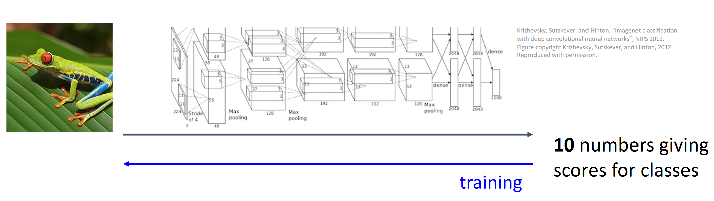
Deep learning-based approaches have several key advantages over classical methods:
- Automatic feature extraction: No need for hand-crafted features like SIFT or HOG.
- Hierarchical representations: Learn features at multiple levels of abstraction (edges → textures → parts → objects).
- Better scaling: Performance improves with more training data and compute.
- End-to-end optimization: Unified optimization from raw inputs to task outputs.
- Transfer learning: Pre-trained models can be adapted to new tasks with limited data.
4.4 Deep Learning History
We will now explore the most important milestones in deep learning for image analysis.
4.4.1 Hubel and Wiesel
Hubel and Wiesel (1959) showed in experiments on cats that there are complex cells/neurons in the visual cortex that only respond to certain patterns. In addition to these complex cells, there are also simple cells that only respond to lines at a certain angle.
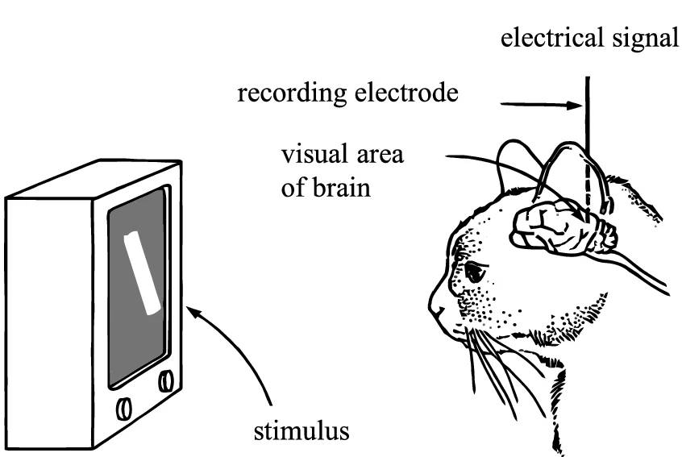
4.4.2 Neocognitron
Fukushima (1980) defined a model of a neural network that can recognize visual patterns. It already has the hierarchical structure of a modern convolutional neural network and is inspired by biological neural networks, particularly from the insights of Hubel and Wiesel (1959).
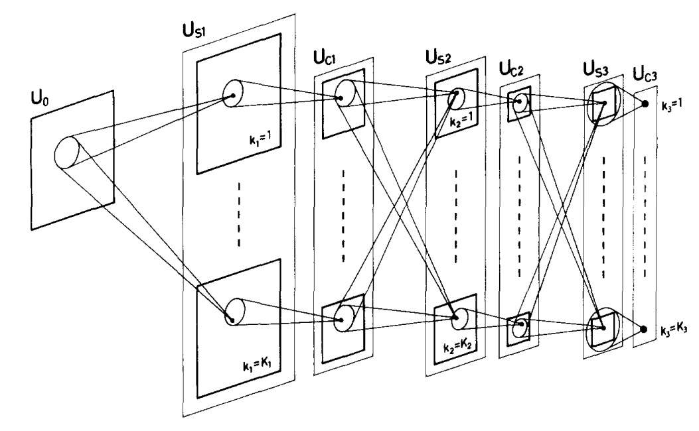
4.4.3 Backpropagation
Rumelhart et al. (1986) introduced the backpropagation algorithm in the context of neural networks. This algorithm is used to train modern neural networks: it finds the parameters of an artificial neural network (ANN) to solve a specific task. Backpropagation is based on the chain rule from calculus and is also important for other machine learning models.
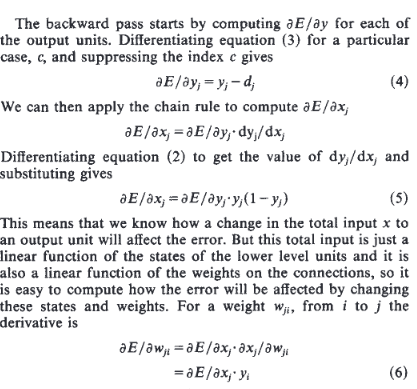
A good video on backpropagation: 3Blue1Brown Backpropagation Calculus
4.4.4 Convolutional Neural Networks (CNNs)
Lecun et al. (1998) implemented convolutional neural networks (CNNs) to recognize handwritten digits. The architecture is specialized for the 2-D structure of image data and trained a model very similar to modern CNNs, as shown in Figure 47.
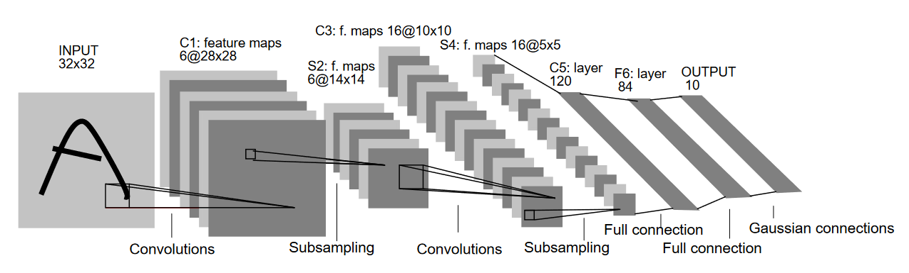
After AlexNet’s breakthrough in 2012 (see previous section), CNNs rapidly evolved and were applied to increasingly complex tasks. Notable developments include:
- VGGNet (2014): Showed that depth matters—16-19 layers with small 3×3 filters
- ResNet (2015): Introduced skip connections, enabling networks with 50-152 layers
- COCO Challenges: Expanded beyond ImageNet to multi-task benchmarks (detection, segmentation, keypoints)
- Mobile architectures: Efficient CNNs for deployment on phones and embedded devices
4.4.5 Other Architectures in Computer Vision
CNNs are still in use today (2025). Meanwhile, there are alternative architectures, such as transformer-based models (Dosovitskiy et al. (2020)), which are extremely successful in language modeling, or multilayer perceptron-based architectures (Liu et al. (2021)).
The question of which architecture type will prevail is open. Currently, it seems that both CNNs and transformer-based models have their place, and often perform similarly (Smith et al. (2023)). Furthermore, hybrid-architectures, combining the strengths of CNNs and transformers have been proposed Vasu et al. (2023). Some works use both architecture types, depending on whether parameter efficiency (CNNs) or raw performance (transformers) are prioritized Siméoni et al. (2025).